Mirth Integration Engine
How to use the Mirth Integration Engine.
Mirth Connect is an integration engine used to integrate healthcare information technology. Usually, the message format passed between systems to convey data is some flavor of HL7, but Mirth can be configured to connect systems for tranfer of data in a number of ways.
We'll look at the basics, and provide a few tutorials to get you up and running.
We'll be working with the following technologies:
- Mirth Connect
- Python
- SQLite
Okay, select one of the tutorials below to get started:
First, download and install Mirth. Mirth Connect is open source software, and can be downloaded from the NextGen website: Download Mirth Connect
Installation instructions can be found here: Installation Instructions
After Mirth Connect is installed, if you're using Windows you should be able to find the Mirth Connect Administrator application in the Start menu. Let's open it.
Open Mirth Connect Administrator
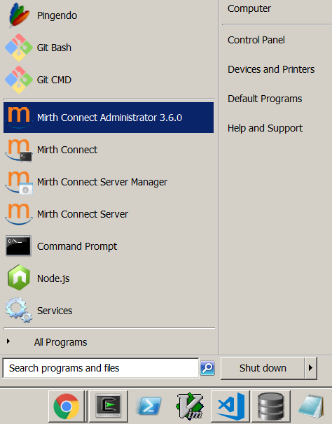
After entering your credentials, the Mirth Connect Administrator application dashboard will appear.
This screen gives you an overview of your current channels (i.e., connections).
The dashboard shows whether a channel is started or stopped, some statistics on the number of messages each channel has received, sent, and filtered, and whether there are any error events.
Dashboard
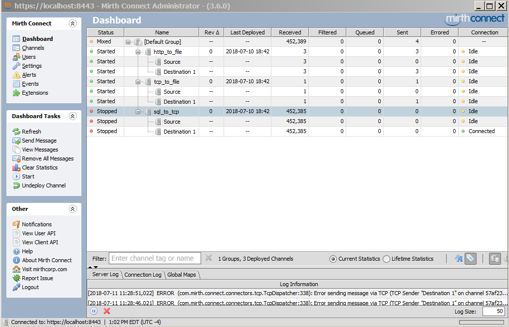
In this tutorial, we'll look at how to set up the following connections:
- An http listener that writes to a file.
- A tcp listener that writes to a file.
- A sql database connection that sends data via tcp.
In the Mirth Connect panel, select Channels to bring up the Channels screen.
In the Channel Tasks panel, select New Channel.
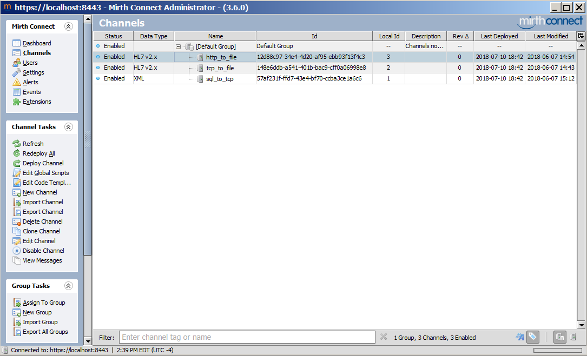
Complete the Summary tab with the following settings:
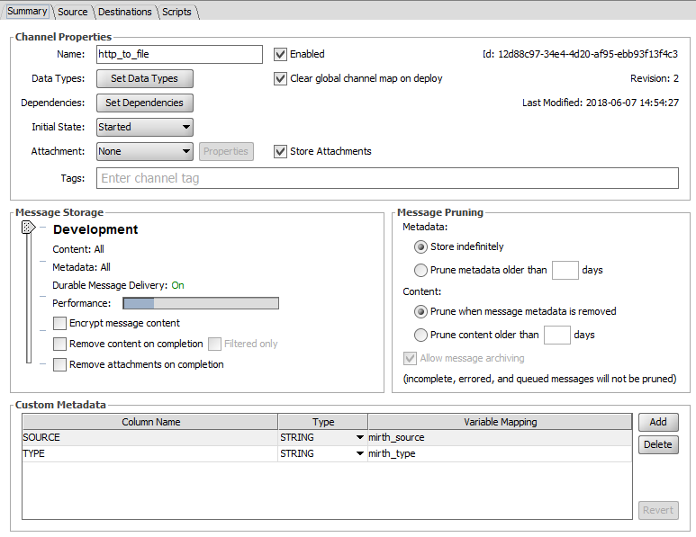
We're going to set the Connector Type to HTTP Listener.
In the HTTP Listener settings, we'll set the base path to ajax and the URL to listen to will be:http://localhost:80/ajax/
http://localhost:80/ajax/ specifies that we'll be listening locally on port 80 for HTTP requests sent to the ajax path.
This is equivalent to the controller in MVC architectures.
Your settings should like this:
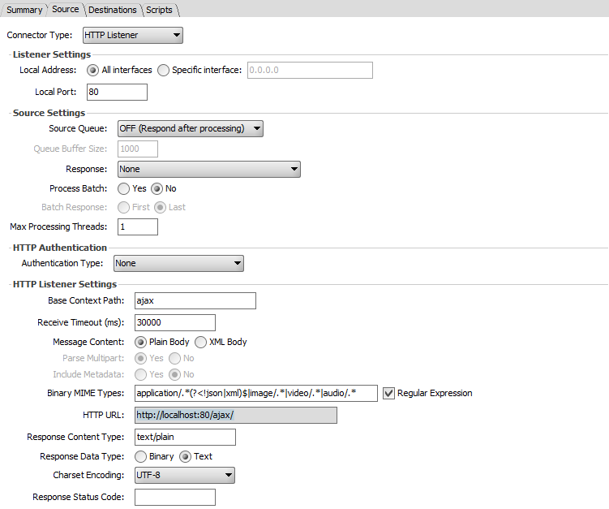
Next, we'll set up the destination to specify where the received message should be written to.
- In this scenario, we'll write to a file that logs the channel name, the date, and the system time whenever we receive a request.
- To do this, set the Connector Type to File Writer.
- In the Directory section, specify the directory you want to write the file to.
- Specify the file name in the File Name section (pretty obvious).
- You can also specify what to do if the file already exists: append, overwrite, or raise an error.
Finally, the Template section allows us to specify what will be written.
We'll write the channel name, the date, and the system time. To do this, you can drag objects from the Destination Mappings sections to the Template section, or just type the following into the Template section:
${message.channelName} ${DATE} ${SYSTIME}
Your destination section should look like the following:
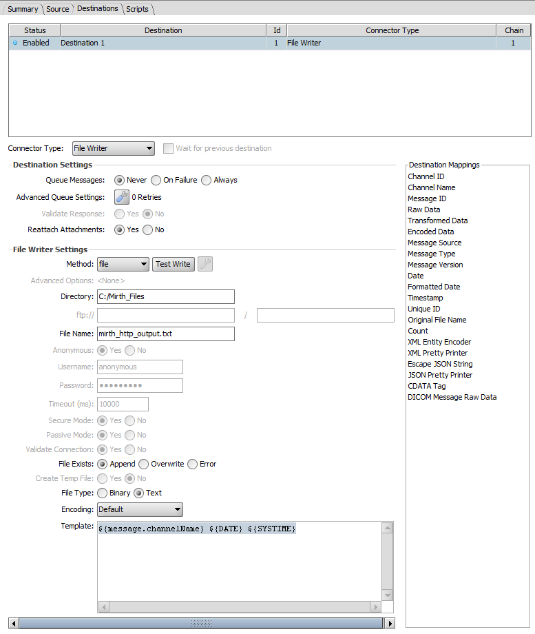
Once that's done, we're all setup. Click on Dashboard to return to the Dashboard section.
If Mirth asks if you want to save your connection, select yes.
On the Dashboard screen, right click on your connection and select Start. It should now be listening. Let's test it.
Open an Internet Browser and point it to
http://localhost:80/ajax/
by typing it into the search bar and press enter.
In Mirth, you should see the number of messages received and sent for the http_to_file channel increase by one each.
Check to see if the file was written correctly by opening the directory you specified to write the file to. In my case, it was
C:\Mirth_Files
You should see the new file. Open it and it should look something like this:
http_to_file 07-06-18_14-54-58.912 1528397698912
That's channel name, date, and system time. Done!
Now we'll build a TCP listener to listen for messages via TCP and write to a file. To do this, we'll set up the channel a little differently, and we'll also make use of a simple Python script to send messages to our TCP listener. Let's get started.
Start by creating a new channel like we did for the HTTP listener channel, but this time name it tcp_to_file.
On the source tab, we'll specify the type as TCP listener, the port as 6666, the mode as server, and the data type as Text. Your source tab should look like this:
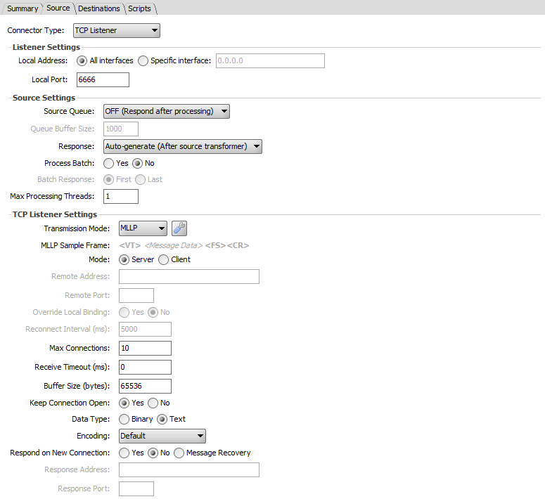
In the Destination tab, we'll set up a File Writer like we did for the HTTP Listener, but this time we'll write the raw message data to the file. Also, be sure to name the file something different than we did previously, or you'll write to the same file.
To write the raw message data, drag the Raw Data object to the Template section, or type the following into the template section:
${message.rawData}
Your destination should look like this:
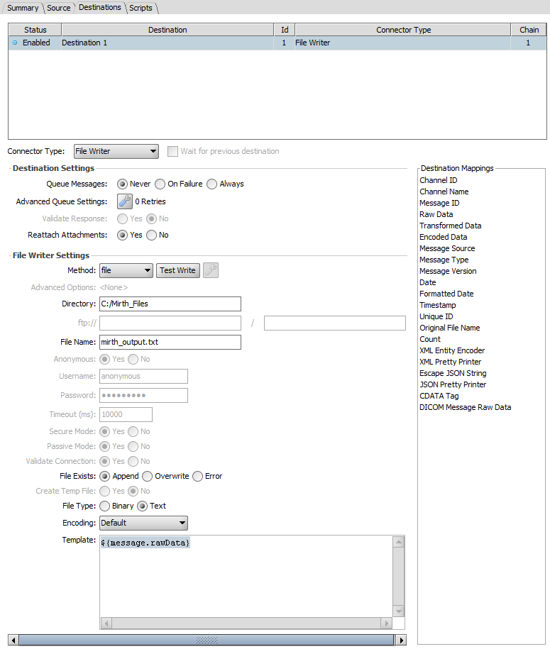
Return to the Dashboard section and tell Mirth you want to save the new channel. Start the channel via the Dashboard by right clicking the channel and selecting Start.
Now, to test the TCP connection, we need to send a TCP message to the localhost at port 6666. To do this, we'll use a little Python script. Here it is:
#!/usr/bin/python
import socket
# Set up the socket to connect to the TCP/IP:PORT for the external system
CP_TCPIP = 'localhost'
CP_PORT = 6666
cpsock = socket.socket(socket.AF_INET, socket.SOCK_STREAM)
# Note that all HL7 messages must be formatted with special beginning and
# ending characters to be processed correctly by the integration engine.
# Messages must start with a vertical tab: \v
# Messages must end with a field seperator and a carriage return: \x1C\r
msg = '''\vMSH|^~\&|FOOBAR LOGIC|FOOBAR^NFWC|BBRHIO Export|MRN^2.16.840.1.113883.3.7120.10.3|20180606070000||ADT^A08|1843887518113770|P|2.3.1|||NE|NE
EVN|A08|20180606070000
PID|1||161111||Parker^Peter^A||19880507|F||2106-3|7777 Easy Street^^Tallahassee^FL^32312||^^^kclark0507@yahoo.com~(860) 859-7234^^CP||English|M|||000-00-7058|||UPD1||||^Gamble^Terreze
NK1|1|Clark^Carol|M||8608597232
NK1|1||P|1202 N MAGNOLIA DR^^TALLAHASSEE^FL^323084634|8508773075||||||||Walgreens #TLH \F\ * N Magnolia @ Miccosukee*
NK1|2|Rosenberg^Lori^W^M.D.|O|1401 Centerville Road Ste 202^^Tallahassee^FL^32308-4638|8508777241|8508771338|||||||N FL W C - L. Rosenberg, MD
NK1|3|Gamble^Terreze|O|1803 Miccosukee Commons Dr^Suite 803^Tallahassee^FL^32308|8504026210|8503256015|||||||TPCA
PV1|1|O|^^^NFWC||||lrosenberg|^Rosenberg^Lori^W|||||||||||_EXPORTVISITID_|||||||||||||||||||||||||||||||_EXPORTVISITID_
GT1|1||Sharp^Kelsea^A||9166 Stonehenge trail^^Tallahassee^FL^32312|8608597234^^^kclark0507@yahoo.com||19880507000000|F|P||000-00-7058
IN1|1||CIGNA|CIGNA|PO BOX 188061^^Chattanooga^TN^37422||8556069294|3341051||||20180101|||P||S|||||||||||||||||||U6641500701\x1C\r'''
try:
# Connect to the external system
cpsock.connect((CP_TCPIP,CP_PORT))
print('Connected to {} at {}'.format(CP_TCPIP,CP_PORT))
print('Sending message...')
# Send the message
# The message must be encoded prior to sending
cpsock.send(msg.encode())
except:
print('Could not connect to {0} at {1}'.format(CP_TCPIP,CP_PORT))
cpsock.close()
The script sets up a TCP/IP connection via the socket library, specifies an HL7 message to send, and sends it to the TCP listener in Mirth. To run the script, copy it to a file, save it with a .py extension, open a terminal of your choice (I prefer Cygwin on Windows), navigate to the directory you saved the file to, and type:
python mirth_send.py
If you have Python installed, the script should run and you should see the messages received and sent count in the Mirth Dashboard increase by one each for the tcp_to_file channel.
Open the file we specified to inspect the message contents.
Voila! Done.
Finally, we'll look at how to set up a SQLite database, read from it via Mirth, construct a message, and send it via TCP.
First, you should have SQLite installed on your machine. If you don't, get it here: Get SQLite
Open the SQLite DB Browser and create a new database. Create some tables, add some fields, and add some records to it. Here's how I set mine up:
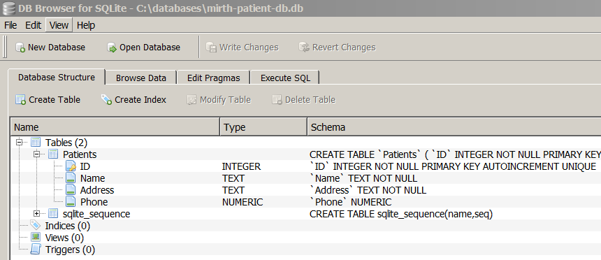
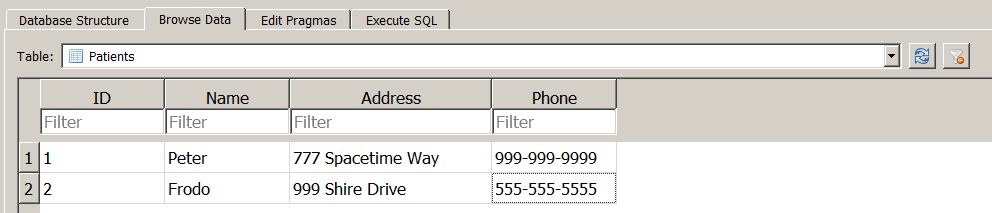
Now we need to setup the database channel in Mirth.
Open Mirth and create a new channel. Name it sql_to_tcp.
In the Source tab, specify Database Reader as the Connector Type. We'll poll the database, so set up something reasonable for the polling settings. I've set it to poll on an interval, and the interval is set to 5 seconds.
Next, specify SQLite as the Driver and in the URL section, we'll use the jdbc driver to connect to the database. I've stored my databases in C:\databases. If you stored them somewhere else, you'll need to edit the URL accordingly. If you chose C:\databases, the URL string will be:
jdbc:sqlite:C:\databases\mirth-patient-db.db�
If you set a username and password for your database, be sure to specify it. There are a number of other settings that are fairly self-explanatory, like Keep Connection Open.
Next, we need to specify a SQL query to run to extract data from the database to send to our destination via TCP. To do this, we'll build a query and insert it into the SQL section, like so:
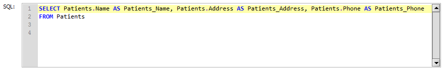
Your completed Source tab should look like this:
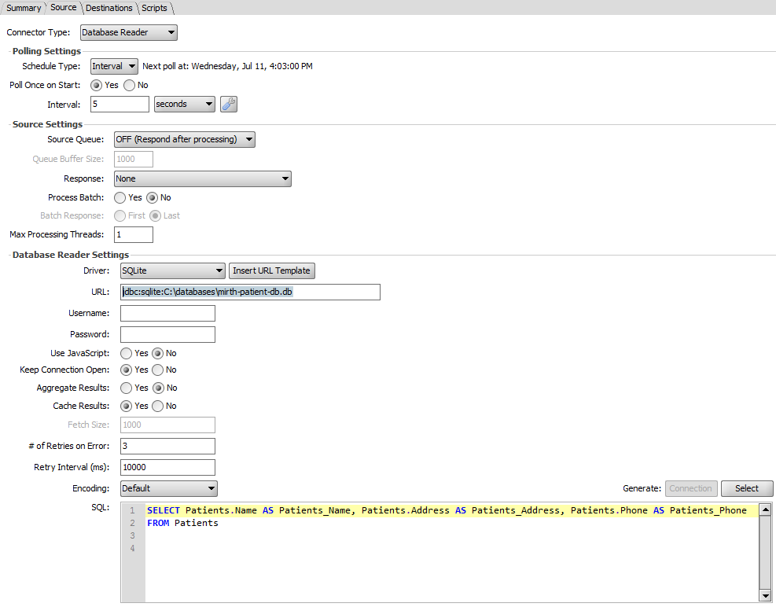
Next, set up the destination tab to send to localhost (0.0.0.0) at port 5000. We'll send the encoded data. Here's what the destination tab should look like:
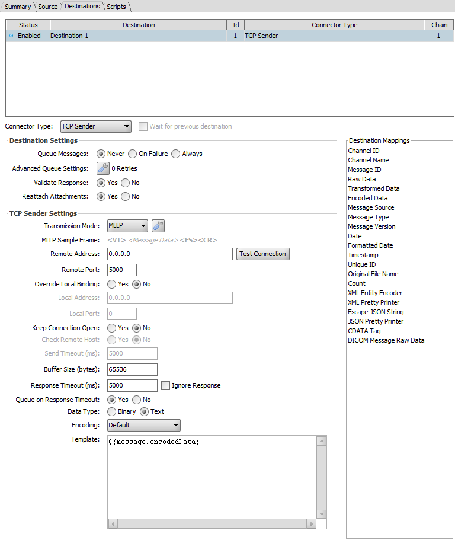
Next, we'll need somewhere to send the TCP message holding the data we extracted. We'll use a simple server built using Python to received and print the message. Here's the Python code for the server:
#!/usr/bin/python
import socket, select
if __name__ == "__main__":
# List to keep track of socket descriptors
CONNECTION_LIST = []
# How much data to receive
RECV_BUFFER = 4096
# Note that localhost, '', and 0.0.0.0 all refer to localhost
HOST = ''
PORT = 5000
# Build a socket and bind to address/port
server_socket = socket.socket(socket.AF_INET, socket.SOCK_STREAM)
# Note that bind takes a tuple
server_socket.bind((HOST, PORT))
# Accept five connections
server_socket.listen(5)
# Add server socket to the list of readable connections
CONNECTION_LIST.append(server_socket)
print "Server up on port " + str(PORT)
while True:
# Get the list sockets which are ready to be read through select
read_sockets,write_sockets,error_sockets = select.select(CONNECTION_LIST,[],[])
for sock in read_sockets:
# New connection
if sock == server_socket:
# Periodically check for new connection on server socket
# Add new client socket to connection list
sockfd, addr = server_socket.accept()
CONNECTION_LIST.append(sockfd)
print "Client (%s, %s) connected" % addr
# Read client messages
else:
data = sock.recv(RECV_BUFFER)
if(data):
if data:
# send the ack and the data to CP
print(data)
else:
print "Client (%s, %s) is offline" % addr
sock.close()
CONNECTION_LIST.remove(sock)
continue
server_socket.close()
Copy it, paste it, and save it as server.py.
Finally, start the server by navigating to the directory you saved the server code to, and start it by using the command:
python server.py
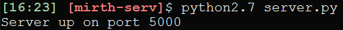
Now start the sql_to_tcp connection in the dashboard and the server should show you a successful connection and a print out of the message.
You've hooked up a database to an integration engine, built a server, and received messages via a TCP connection. Congrats!